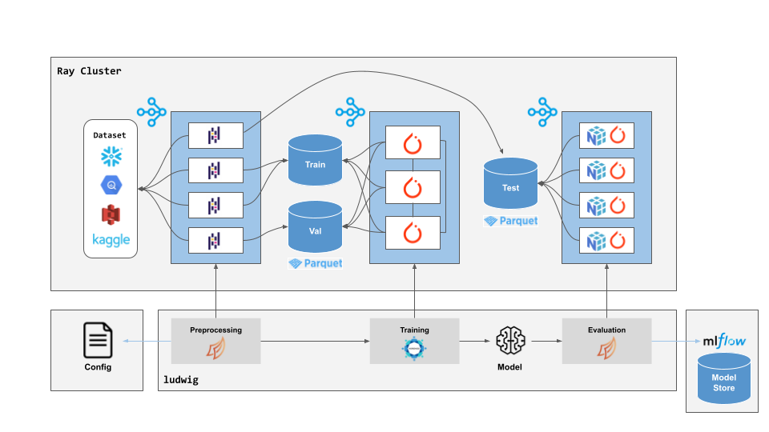

Distributed Training
For large datasets, training on a single machine storing the entire dataset in memory can be prohibitively expensive. As such, Ludwig supports distributing the preprocessing, training, and prediction steps across multiple machines and GPUs to operate on separate partitions of the data in parallel.

Ludwig supports two different distributed execution backends: Ray and Horovod / MPI. In most cases, we recommend using Ray (supporting both distributed data processing and distributed training at once), but native Horovod execution is also supported, particularly for users accustomed to running with MPI.
Ray¶
Ray is a framework for distributed computing that makes it easy to scale up code that runs on your local machine to execute in parallel across a cluster.
Ludwig has native integration with Ray for both hyperparameter search and distributed training.
Running with Ray has several advantages over local execution:
- Ray enables you to provision a cluster of machines in a single command through its cluster launcher.
- Horovod on Ray allows you to do distributed training without needing to configure MPI in your environment.
- Dask on Ray allows you to process large datasets that don't fit in memory on a single machine.
- Ray Tune allows you to easily run distributed hyperparameter search across many machines in parallel.
- Ray provides easy access to high performance instances like high memory or GPU machines in the cloud.
All of this comes for free without changing a single line of code in Ludwig. When Ludwig detects that you're running within a Ray cluster, the Ray backend will be enabled automatically. You can also enable the Ray backend explicitly either through the command line:
ludwig train ... --backend ray
Or in the Ludwig config:
backend:
type: ray
processor:
type: dask
trainer:
strategy: horovod
Running Ludwig with Ray¶
To use the Ray with Ludwig, you will need to have a running Ray cluster. The simplest way to start a Ray cluster is to
use the Ray cluster launcher, which can be installed locally
with pip:
pip install ray
Starting a Ray cluster requires that you have access to a cloud instance provider like AWS EC2 or Kubernetes.
Here's an example of a partial Ray cluster configuration YAML file you can use to create your Ludwig Ray cluster:
cluster_name: ludwig-ray-gpu-latest
min_workers: 4
max_workers: 4
docker:
image: "ludwigai/ludwig-ray-gpu:latest"
container_name: "ray_container"
head_node:
InstanceType: m5.2xlarge
ImageId: latest_dlami
worker_nodes:
InstanceType: g4dn.2xlarge
ImageId: latest_dlami
This configuration runs on AWS EC2 instances, with a CPU head node and 4 GPU (Nvidia T4) worker nodes. Every worker runs within a Docker image that provides Ludwig and its dependencies, including Ray, Dask, Horovod, etc. You can use one of these pre-built Docker images as the parent image for your cluster. Ludwig provides both CPU and GPU images ready for use with Ray.
Once your Ray cluster is configured, you can start the cluster and submit your existing ludwig commands or Python
files to Ray for distributed execution:
ray up cluster.yaml
ray submit cluster.yaml \
ludwig train --config config.yaml --dataset s3://mybucket/dataset.parquet
Best Practices¶
Cloud Storage¶
In order for Ray to preprocess the input dataset, the dataset file path must be readable
from every worker. There are a few ways to achieve this:
- Replicate the input dataset to the local filesystem of every worker (suitable for small datasets).
- Use a network mounted filesystem like NFS.
- Use an object storage system like Amazon S3.
In most cases, we recommend using an object storage system such as S3 (AWS), GCS (GCP), or ADLS (Azure).
To connect to one of these systems from Ludwig you need two things:
-
Install the appropriate filesystem driver package into your Python environment:
s3fs # S3 adlfs # Azure Storage gcsfs # GCS -
Mount your credentials file or set the correct environment variables (example: S3) in your container.
See Cloud Storage for more detailed instructions for each major filesystem.
Autoscaling Clusters¶
By default, Ludwig on Ray will attempt to use all available GPUs for distributed training. However, if running in an autoscaling clusters there may not be any GPUs in the cluster at the time Ludwig performs its check. In such cases, we recommend setting the number of GPU workers explicitly in the config.
For example, to train with 4 GPUs:
backend:
trainer:
use_gpu: true
num_workers: 4
When using Hyperopt in an autoscaling cluster, you should set max_concurrent_trials and gpu_resources_per_trial,
otherwise Ludwig will similarly underestimate how many trials can fit in the fully autoscaled cluster at a time:
hyperopt:
executor:
max_concurrent_trials: 4
gpu_resources_per_trial: 1
Horovod / MPI¶
You can distribute the training and prediction of your models using Horovod, which supports training on a single machine with multiple GPUs as well as on multiple machines with multiple GPUs.
In order to use distributed training you have to install Horovod as detailed in Horovod's installation instructions. If you wish to use MPI, be sure to install OpenMPI or another implementation before installing Horovod:
pip install horovod mpi4py
Horovod works, in practice, by increasing the batch size and distributing a part of each batch to a different node and collecting the gradients from all the nodes in a smart and scalable way. It also adjusts the learning rate to balance the increase in the batch size. The advantage is that training speed scales almost linearly with the number of nodes.
experiment, train and predict commands accept a --backend=horovod argument that instructs the model building,
training and prediction phases to be conducted using Horovod in a distributed way. A horovodrun command specifying
which machines and / or GPUs to use, together with a few more parameters, must be provided before the call to Ludwig's
command. For example, to train a Ludwig model on a local machine with four GPUs one you can run:
horovodrun -np 4 \
ludwig train ...other Ludwig parameters...
To train on four remote machines with four GPUs each you can run:
horovodrun -np 16 \
-H server1:4,server2:4,server3:4,server4:4 \
ludwig train ...other Ludwig parameters...
The same applies to experiment, predict and test.
More details on Horovod installation and run parameters can be found in Horovod's documentation.